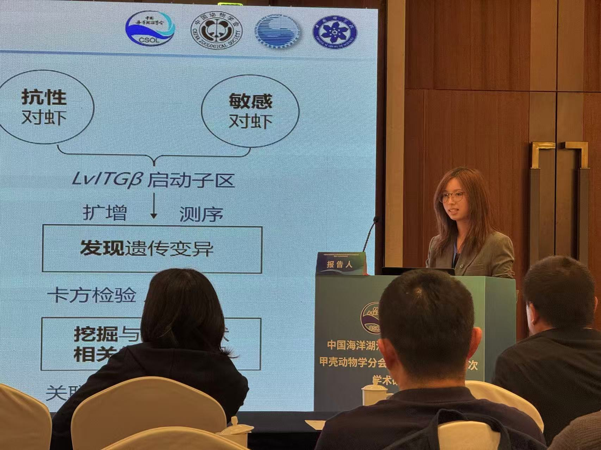

The 17th Academic Symposium, Crustacean Branch of Chinese Society of Oceanology and Limnology (CSOL)
Presented Association between promoter polymorphisms of the LvITGβ gene and Enterocytozoon hepatopenaei infection in Litopenaeus vannamei.